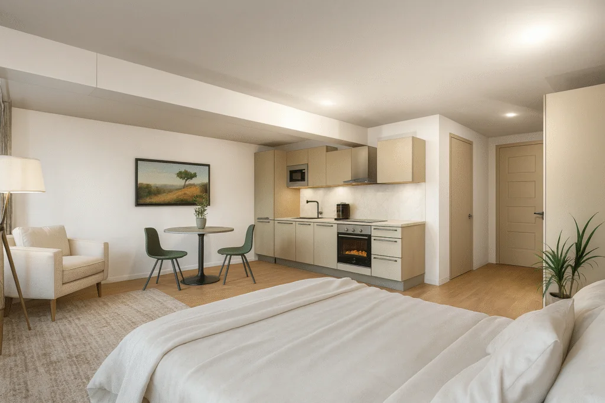

Die Kosten hängen vom Pflegegrad und den benötigten Leistungen ab. Die Pflegekasse übernimmt einen Teil der Pflegesachleistungen und des Pflegegeldes. Wir beraten Sie transparent, welche Leistungen für Sie in Frage kommen und welche Kosten auf Sie zukommen können.
Wenn plötzlich Pflege benötigt wird
Viele Angehörige stehen plötzlich vor Fragen: Welche Pflege ist richtig? Was ist organisatorisch möglich? Juventa nimmt sich Zeit, hört zu und erklärt verständlich, welche Möglichkeiten es gibt.
-
Situation einschätzen
Welche Unterstützung wird aktuell benötigt – zu Hause, vorübergehend oder längerfristig?
-
Möglichkeiten klären
Pflegegrad, Leistungen und mögliche Unterstützung prüfen – verständlich und ohne Druck.
-
Persönlich sprechen
Gemeinsam klären, welche Versorgung sinnvoll ist – für Sie und Ihre Angehörigen.
-
Pflege organisieren
Leistungen und Termine individuell abstimmen – mit festen Bezugspersonen.
Jetzt Kontakt aufnehmen – für eine verlässliche und persönliche Pflegeberatung
Pflegeberatung anfragen
Ambulante Pflege
Mobile Pflege und Betreuung
Hilfe, Pflege und Betreuung bei Ihnen zu Hause – so individuell, wie Ihr Alltag es braucht.
Das Leben verläuft oft nicht ohne Hürden. Ob durch Krankheit, einen Unfall oder den Alterungsprozess: Manches fällt irgendwann nicht mehr so leicht. Wir unterstützen Sie bei der Bewältigung des Alltags – mit Fachlichkeit, Zeit und echter Nähe in Baden-Baden, Gernsbach und Umgebung.
Fragen zur ambulanten Pflege
Sie wenden sich an Ihre Pflegekasse und stellen einen Antrag auf Pflegegrad. Ein MDK-Gutachter bewertet den Pflegebedarf. Wir unterstützen Sie bei der Vorbereitung und erklären verständlich, welche Unterlagen sinnvoll sind.
Ja. Vertrauen entsteht durch Kontinuität. Deshalb setzen wir auf feste Bezugspersonen, die Sie kennenlernen und die Ihren Alltag sowie Ihre Wünsche kennen.
Kurzzeitpflege entlastet nach einem Krankenhausaufenthalt oder in Übergangssituationen. Verhinderungspflege springt ein, wenn Angehörige vorübergehend nicht pflegen können – zum Beispiel im Urlaub oder bei Krankheit. Beides lässt sich flexibel zu Hause organisieren; bei Bedarf auch im Umfeld unseres Betreuten Wohnens.
Wichtig ist vor allem ein separater Schlafplatz für die Betreuungskraft. Alles Weitere – Auswahl, Planung und Abstimmung mit dem ambulanten Pflegedienst – organisieren wir gemeinsam mit Ihnen.
Welche Unterstützung könnte zu Ihrer Situation passen?
Ambulante Pflege
Ich brauche Unterstützung zu Hause.
Mobile Pflege, Hauswirtschaft und 24h-Betreuung in vertrauter Umgebung.
Mehr erfahren Für AngehörigeMeine Eltern kommen allein nicht mehr gut zurecht.
Orientierung, Entlastung und Beratung – ohne Druck und ohne Fachchinesisch.
Zur Orientierung Betreutes WohnenIch möchte selbstständig wohnen und trotzdem Sicherheit haben.
Eigene Apartments in der Brückenmühle, Service im Haus und Pflege aus einer Hand.
Zur BrückenmühlePflegegrad & Kosten
Finanzierung muss kein Rätsel bleiben. Zuerst der Überblick – danach die Antworten.
Pflegegrad 1–5
Was bedeutet ein Pflegegrad? Er beschreibt den Unterstützungsbedarf und öffnet den Zugang zu Leistungen der Pflegekasse.
Pflegekasse
Welche Leistungen können übernommen werden? Pflegesachleistungen, Pflegegeld und Verhinderungspflege – je nach Situation.
Eigenanteil
Welche Kosten können zusätzlich entstehen? Das hängt vom Bedarf und Pflegegrad ab – wir erklären es transparent.
Beratung
Wo erhalten Betroffene Unterstützung? Bei Juventa – vom Antrag bis zur Organisation der Versorgung in Baden-Baden und Gernsbach.
Fragen zu Pflegegrad & Kosten
Für Leistungen der Pflegeversicherung in der Regel ja. Ohne Pflegegrad können gewünschte Leistungen privat vereinbart werden. Wir prüfen gemeinsam, was in Ihrer Situation möglich und sinnvoll ist – und helfen beim Antrag, falls noch keiner vorliegt.
Wir. Wir unterstützen aktiv bei Anträgen zur Pflegeversicherung, Sozialhilfe, gesetzlicher Betreuung und im Austausch mit den Krankenkassen. Sie sind nicht allein.
Die Kosten setzen sich aus Wohnen, Betreuung vor Ort und optionalen Leistungen zusammen. Pflegeleistungen richten sich nach Pflegegrad und Bedarf. Wir erstellen mit Ihnen eine transparente Übersicht und klären, welche Anteile die Pflegekasse oder Sozialhilfeträger übernehmen können. Details finden Sie auch auf der Seite Betreutes Wohnen.
Das erste Orientierungsgespräch ist für Sie unverbindlich. Wir hören zu, erklären Optionen und geben eine ehrliche Einschätzung – ohne Druck und ohne versteckte Kosten.
Sie wenden sich an Ihre Pflegekasse und stellen einen Antrag auf Pflegegrad. Ein MDK-Gutachter bewertet den Pflegebedarf. Wir unterstützen Sie bei der Vorbereitung und erklären verständlich, welche Unterlagen sinnvoll sind.
Die Kosten hängen vom Pflegegrad und den benötigten Leistungen ab. Die Pflegekasse übernimmt einen Teil der Pflegesachleistungen und des Pflegegeldes. Wir beraten Sie transparent, welche Leistungen für Sie in Frage kommen und welche Kosten auf Sie zukommen können.

Betreutes Wohnen
Selbstständig leben. Unterstützung wissen.
In der Brückenmühle Gernsbach wohnen Sie in Ihrem eigenen Apartment – mit Service, Café und angebundener Pflege.
Statt anonymer Heimstrukturen erwartet Sie ein Alltag mit Selbstbestimmung, Geborgenheit und echtem Miteinander. Ob gemeinsames Café, Alltagsbegleitung oder professionelle Pflege: Hier verbinden sich Freiheit und Fürsorge. Eine Pflege-WG in Baden-Baden ist als Phase 2 geplant.
- Eigene Apartments statt Stationsflur
- Sicherheit und Präsenz im Haus
- Ambulante Fachpflege bei Bedarf
Fragen zum Betreuten Wohnen
Menschen, die selbstbestimmt in einem eigenen Apartment leben möchten und gleichzeitig Service, Gemeinschaft und bei Bedarf Pflegeanschluss schätzen. Ob mit oder ohne Pflegegrad: Wir klären im Gespräch, was zu Ihrer Situation passt.
In der Regel nein. Ambulante Pflege von Juventa ist an die Brückenmühle angebunden – Sie behalten vertraute Ansprechpartner. Steigt der Bedarf weiter, denken wir gemeinsam weiter: bis hin zur geplanten Pflege-WG in Baden-Baden (Phase 2).
Wir. Wir unterstützen aktiv bei Anträgen zur Pflegeversicherung, Sozialhilfe, gesetzlicher Betreuung und im Austausch mit den Krankenkassen. Sie sind nicht allein.
Ihr Apartment ist Ihr Zuhause. Besuche sind willkommen – im Sinne Ihrer Tagesstruktur und der Hausgemeinschaft. Gerne beraten wir Sie individuell dazu.
Ja – sehr gern. Wir laden Sie ein, Apartments, Haus und Alltag vor Ort kennenzulernen. Rufen Sie uns an oder schreiben Sie eine kurze Nachricht.
Mehr Mitbestimmung, eigene vier Wände und weniger Anonymität – bei Sicherheit und professioneller Versorgung. Im Betreuten Wohnen bleibt Ihr Alltag Ihr eigener; Pflege kommt bei Bedarf zu Ihnen ins Apartment.
Für Angehörige
Wenn es um die eigenen Eltern geht
Viele Angehörige stehen plötzlich vor Fragen: Welche Pflege ist richtig? Was ist organisatorisch möglich?
Juventa nimmt sich Zeit, hört zu und erklärt verständlich, welche Möglichkeiten es gibt – von der Entlastung im Alltag bis zur Verhinderungspflege.
Fragen von Angehörigen
Ja. Kurzzeitpflege entlastet nach einem Krankenhausaufenthalt oder in Übergangssituationen. Verhinderungspflege springt ein, wenn Angehörige vorübergehend nicht pflegen können – zum Beispiel im Urlaub oder bei Krankheit.
Wir. Wir unterstützen aktiv bei Anträgen zur Pflegeversicherung, Sozialhilfe, gesetzlicher Betreuung und im Austausch mit den Krankenkassen. Sie sind nicht allein.
In der Regel nein. Ambulante Pflege, Betreutes Wohnen und – perspektivisch – die geplante Pflege-WG in Baden-Baden greifen ineinander. Sie behalten vertraute Ansprechpartner und oft auch dieselben Pflegekräfte.
Ja. Wir setzen auf feste Bezugspersonen in der Pflege und klare Ansprechpartner im Team – von der Beratung bis zur Organisation im Alltag.
Ja. Vertrauen entsteht durch Kontinuität. Deshalb setzen wir auf feste Bezugspersonen, die Sie kennenlernen und die Ihren Alltag sowie Ihre Wünsche kennen.
Wissen, das orientiert
Regelmäßig neue Beiträge rund um Pflege, Finanzierung, Pflegegrad und Betreutes Wohnen.
Den Pflegegrad verstehen
Was bedeuten die Pflegegrade – und welche Leistungen stehen Ihnen konkret zu? Ein Überblick für Angehörige und Betroffene.
Beitrag lesenKosten klar im Blick
Wie Pflegeversicherung, Entlastungsleistungen und Eigenanteil zusammenspielen – verständlich erklärt.
Beitrag lesen
Tipps für Angehörige
Praktische Impulse für den Pflegealltag – nahbar, konkret und ohne Fachchinesisch.
Beitrag lesenAlle Fragen & Antworten
Alle bisherigen FAQs an einem Ort – filterbar nach Thema oder über die Suche oben.
Die Kosten hängen vom Pflegegrad und den benötigten Leistungen ab. Die Pflegekasse übernimmt einen Teil der Pflegesachleistungen und des Pflegegeldes. Wir beraten Sie transparent, welche Leistungen für Sie in Frage kommen und welche Kosten auf Sie zukommen können.
Sie wenden sich an Ihre Pflegekasse und stellen einen Antrag auf Pflegegrad. Ein MDK-Gutachter bewertet den Pflegebedarf. Wir unterstützen Sie bei der Vorbereitung und erklären verständlich, welche Unterlagen sinnvoll sind.
Für Leistungen der Pflegeversicherung in der Regel ja. Ohne Pflegegrad können gewünschte Leistungen privat vereinbart werden. Wir prüfen gemeinsam, was in Ihrer Situation möglich und sinnvoll ist – und helfen beim Antrag, falls noch keiner vorliegt.
Wir. Wir unterstützen aktiv bei Anträgen zur Pflegeversicherung, Sozialhilfe, gesetzlicher Betreuung und im Austausch mit den Krankenkassen. Sie sind nicht allein.
Das erste Orientierungsgespräch ist für Sie unverbindlich. Wir hören zu, erklären Optionen und geben eine ehrliche Einschätzung – ohne Druck und ohne versteckte Kosten.
Ja. Vertrauen entsteht durch Kontinuität. Deshalb setzen wir auf feste Bezugspersonen, die Sie kennenlernen und die Ihren Alltag sowie Ihre Wünsche kennen.
Kurzzeitpflege entlastet nach einem Krankenhausaufenthalt oder in Übergangssituationen. Verhinderungspflege springt ein, wenn Angehörige vorübergehend nicht pflegen können – zum Beispiel im Urlaub oder bei Krankheit. Beides lässt sich flexibel zu Hause organisieren; bei Bedarf auch im Umfeld unseres Betreuten Wohnens.
Ja. Kurzzeitpflege entlastet nach einem Krankenhausaufenthalt oder in Übergangssituationen. Verhinderungspflege springt ein, wenn Angehörige vorübergehend nicht pflegen können – zum Beispiel im Urlaub oder bei Krankheit.
Wichtig ist vor allem ein separater Schlafplatz für die Betreuungskraft. Alles Weitere – Auswahl, Planung und Abstimmung mit dem ambulanten Pflegedienst – organisieren wir gemeinsam mit Ihnen.
Sie wohnen in Ihrem eigenen Apartment in der Brückenmühle Gernsbach – selbstbestimmt, mit Service, Café und Gemeinschaft im Haus. Ambulante Pflege durch Juventa kann direkt angebunden werden. Eine Pflege-WG in Baden-Baden ist als nächste Phase geplant.
Menschen, die selbstbestimmt in einem eigenen Apartment leben möchten und gleichzeitig Service, Gemeinschaft und bei Bedarf Pflegeanschluss schätzen. Ob mit oder ohne Pflegegrad: Wir klären im Gespräch, was zu Ihrer Situation passt.
Die Kosten setzen sich aus Wohnen, Betreuung vor Ort und optionalen Leistungen zusammen. Pflegeleistungen richten sich nach Pflegegrad und Bedarf. Wir erstellen mit Ihnen eine transparente Übersicht und klären, welche Anteile die Pflegekasse oder Sozialhilfeträger übernehmen können.
In der Regel nein. Ambulante Pflege von Juventa ist an die Brückenmühle angebunden. Steigt der Bedarf weiter, denken wir gemeinsam weiter – bis hin zur geplanten Pflege-WG in Baden-Baden (Phase 2).
Ihr Apartment ist Ihr Zuhause. Besuche sind willkommen – im Sinne Ihrer Tagesstruktur und der Hausgemeinschaft. Gerne beraten wir Sie individuell dazu.
Ja – sehr gern. Wir laden Sie ein, Apartments, Haus und Alltag vor Ort kennenzulernen. Rufen Sie uns an oder schreiben Sie eine kurze Nachricht.
Mehr Mitbestimmung, eigene vier Wände und weniger Anonymität – bei Sicherheit und professioneller Versorgung. Im Betreuten Wohnen bleibt Ihr Alltag Ihr eigener; Pflege kommt bei Bedarf zu Ihnen.
Hinter Juventa stehen Fee Schmid und Fabian Lepold – mit Erfahrung in Pflege, Betreuung und Wohnkonzepten. Gemeinsam mit dem Team in Baden-Baden und Gernsbach verbinden wir Fachlichkeit mit Nähe.
Ja. Wir setzen auf feste Bezugspersonen in der Pflege und klare Ansprechpartner im Team – von der Beratung bis zur Organisation im Alltag.
Telefonisch unter +49 178 5254075, per E-Mail an info@juventa-pflege.de oder vor Ort nach Termin am Sonnenplatz 2 in Baden-Baden bzw. in der Brückenmühle Gernsbach. Montag bis Freitag von 08:00 bis 17:00 Uhr.
Weil gute Pflege nur dort entsteht, wo Menschen wertgeschätzt werden. Bei Juventa zählen feste Bezugspersonen, planbare Strukturen, faire Bezahlung und echte Zeit für Menschen – nicht der übervolle Tourenplan. Mehr dazu auf unserer Seite Stellenanzeigen.
Für die Stelle als Pflegefachkraft ja. Als Präsenzkraft oder in der Hauswirtschaft ist Quereinstieg ausdrücklich willkommen – entscheidend sind Herz, Zuverlässigkeit und Freude am Umgang mit Menschen. Offene Stellen finden Sie unter Stellenanzeigen.
Vollzeit, Teilzeit und Minijob. Wir wissen, wie wichtig planbare Dienste sind – besonders in der Pflege. Deshalb legen wir Wert auf gute Organisation und Rücksicht auf persönliche Bedürfnisse.
Nein. Wir finden für alle den richtigen Einsatz. Erfahrung und Haltung zählen mehr als das Geburtsjahr.
Am einfachsten per E-Mail an info@juventa-pflege.de oder telefonisch unter +49 178 5254075. Eine Initiativbewerbung ist jederzeit willkommen. Alle offenen Stellen: Stellenanzeigen.
Keine Frage passt zu Ihrer Suche. Versuchen Sie ein anderes Stichwort oder schreiben Sie uns.
Persönliche Beratung
Ihre Frage war nicht dabei?
Manche Fragen lassen sich persönlich schneller und besser klären. Juventa unterstützt Interessierte und Angehörige dabei, die passende Lösung für ihre individuelle Situation zu finden.
Mobil+49 178 5254075
Festnetz+49 7221 9959934
E-Mailinfo@juventa-pflege.de
StandorteSonnenplatz 2, Baden-Baden · Brückenmühle Gernsbach
